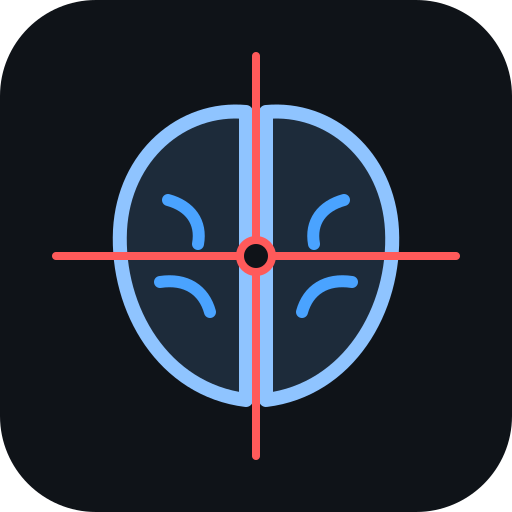

Triplanar
Visualize NIfTI e DICOM e converta DICOM em NIfTI direto no navegador. As imagens não saem do seu aparelho.
Ou arraste arquivos (.nii, .nii.gz, .nrrd, .mgz, DICOM, .zip) ou uma pasta para cá.
Solte para abrir
Carregando…

TriplanarVisualize NIfTI e DICOM e converta DICOM em NIfTI direto no navegador. As imagens não saem do seu aparelho.
Ou arraste arquivos (.nii, .nii.gz, .nrrd, .mgz, DICOM, .zip) ou uma pasta para cá.